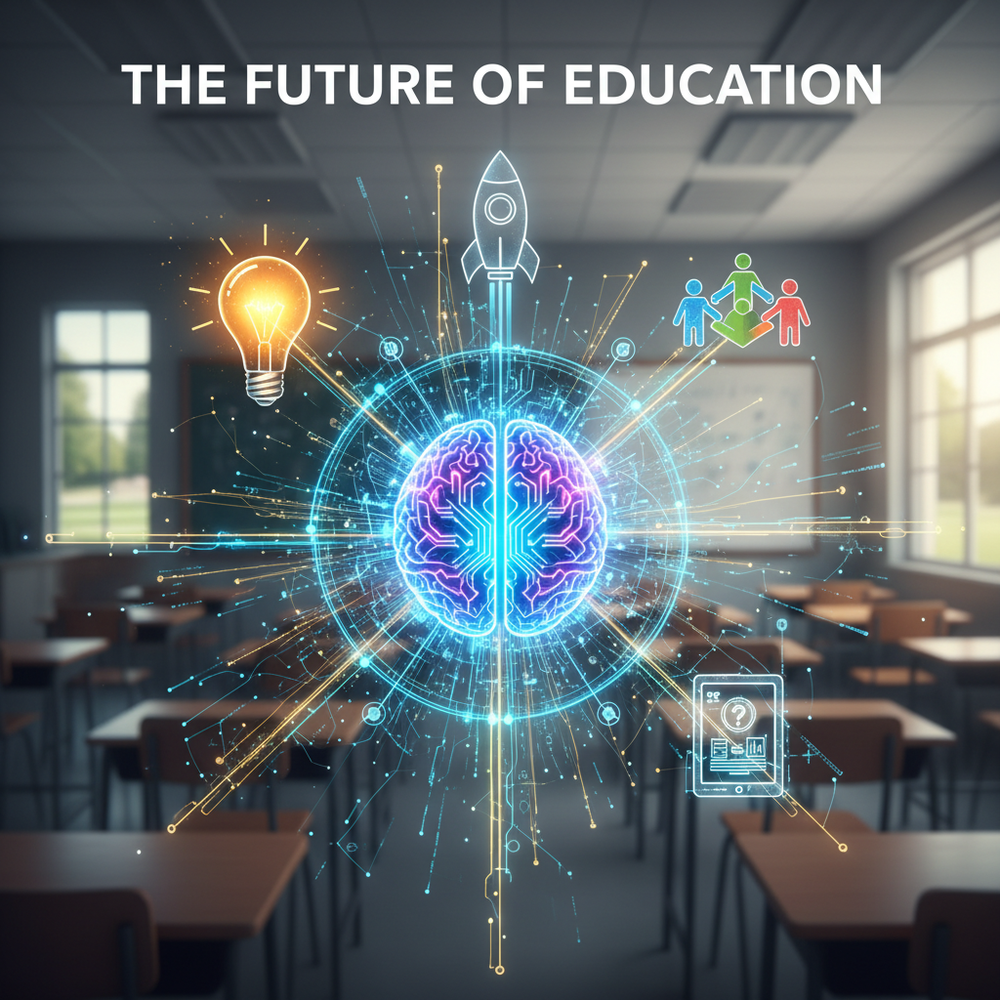
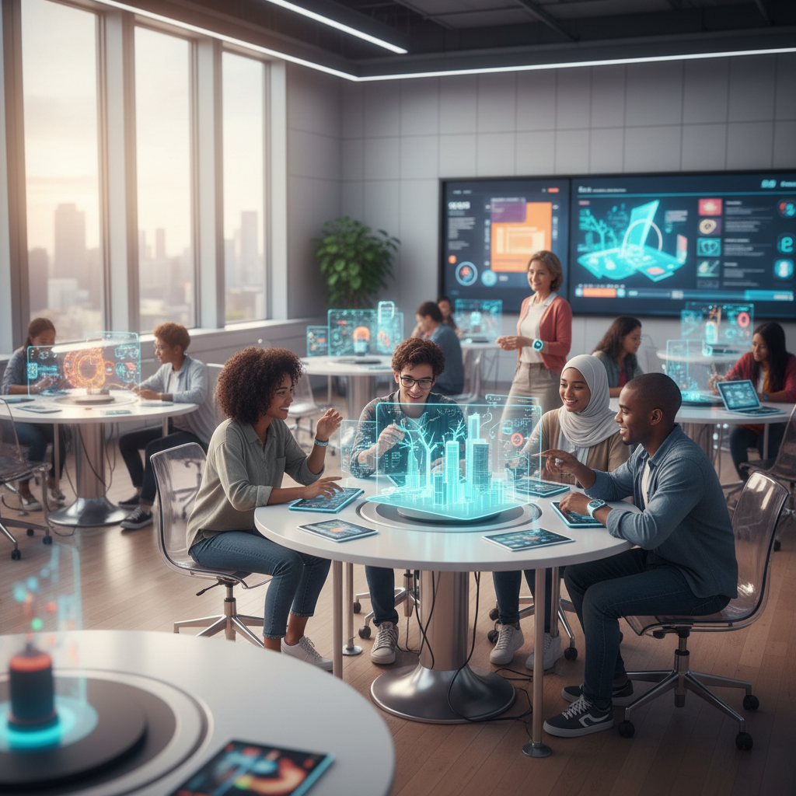
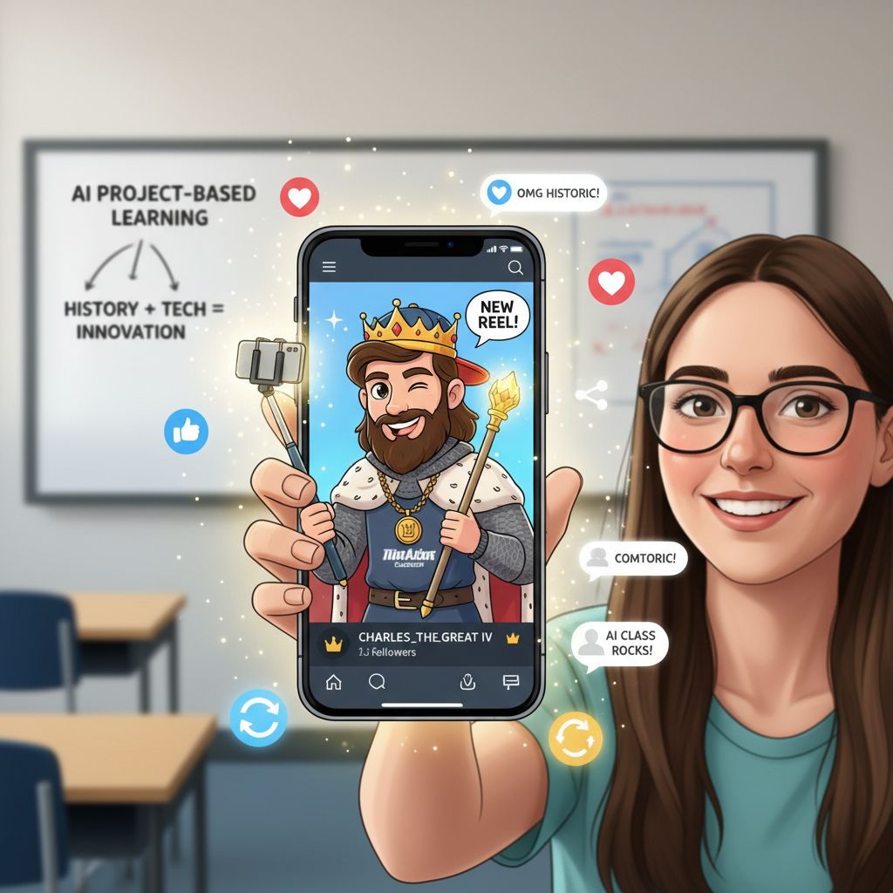

Pamatujete si na ten pocit, když jste poprvé stáli před třídou? Chtěli jste předávat vášeň, měnit životy a vidět v očích žáků ten „aha moment". Jenže realita nás často semele do kolotoče opravování testů z faktů, které si děti pamatují přesně do zazvonění.
V éře umělé inteligence se pravidla hry změnila. Biflování je klinicky mrtvé. Pokud se žáka zeptáte na datum bitvy nebo chemický vzorec, jeho telefon mu odpoví dřív, než vy stačíte doříct větu.
Ale pozor – to není hrozba. To je vaše vstupenka ke svobodě. AI je ten nejpracovitější asistent, jakého jste kdy měli. Je čas přestat testovat paměť a začít trénovat mysl.
Projektová výuka: Už žádná „práce navíc"
Mnoho učitelů se projektům vyhýbá, protože jejich příprava je vyčerpávající. Vymyslet téma, rozvrhnout role, nastavit časovou osu... to je práce na celý víkend. S AI je to práce na pět minut.
Místo suchého zadání „Vyjmenuj panovníky" hoďte žákům rukavici:
„Karel IV. právě ovládl sociální sítě. Navrhněte mu kampaň, která sjednotí rozdrobenou Evropu a získá mu 10 milionů followerů mezi šlechtou i poddanými."

V tu ránu se historie mění v marketing, psychologii a strategii. Žáci musí pochopit Karlovu vizi, aby ji dokázali „prodat". AI jim v tom nebude podvádět – AI jim bude dělat tiskového mluvčího nebo oponenta.
Jak AI promění vaši přípravu:
🏗️ Architekt projektu
AI vám navrhne scénář, který má hlavu a patu.
🚨 Krizový manažer
Požádejte AI: „Vymysli tři nečekané zvraty, které žákům v polovině projektu zkomplikují situaci."
🎯 Diferenciace
AI dokáže bleskově upravit zadání pro talentované žáky i pro ty se specifickými potřebami.
🎁 BONUS: Prompt list pro učitele
Jak nechat AI vygenerovat 10 nápadů na projekt během minuty? Zkopírujte následující text do ChatGPT (nebo jiného AI nástroje) a sledujte tu jízdu. Nezapomeňte v hranatých závorkách doplnit své téma!
• Odmítají pouhé biflování faktů.
• Využívají principy gamifikace nebo reálných životních situací.
• Definují jasný cíl (výstup), který žáci vytvoří.
• Zahrnují kritické myšlení a spolupráci.
Ke každému nápadu napiš krátký úderný název a jednu větu o tom, co je hlavním úkolem žáků."
🚀 10 nápadů na projekty, které "přepíšou" vaši výuku
1. Influencer z minulosti (Dějepis/Literatura)
Úkol: Žáci vytvoří strategii sociálních sítí pro historickou postavu (např. Jana Žižku nebo Boženu Němcovou). Musí navrhnout, co by postovali, jak by reagovali na "hejty" tehdejší šlechty a jaké "reels" by natáčeli, aby získali podporu pro své myšlenky.
2. Krizový štáb: Epidemie (Biologie/ZSV)
Úkol: Ve třídě vypukne fiktivní nákaza neznámým virem. Žáci se rozdělí na virology (zkoumají šíření), tiskové mluvčí (uklidňují veřejnost) a ekonomy (řeší dopady). Musí do konce hodiny navrhnout tříbodový plán záchrany školy.
3. Realitka "Mars 2050" (Fyzika/Zeměpis)
Úkol: Studenti musí prodat první parcely na Marsu. Aby uspěli, musí vyřešit fyzikální limity (atmosféra, gravitace, voda) a vytvořit přesvědčivý technický nákres kolonizace, který obstojí před kritickými investory (učiteli).
4. Soud s literárním hrdinou (Český jazyk/Etika)
Úkol: Postavte Romea, Odyssea nebo třeba Raskolnikova před soud. Žáci v rolích žalobců a obhájců musí citovat text jako důkazní materiál a argumentovat, zda byl čin hrdiny morálně ospravedlnitelný.
5. Bankrotářův deník (Matematika/Finanční gramotnost)
Úkol: Každý žák dostane fiktivní scénář: "Máš dluh 2 miliony, plat 25 tisíc a dvě děti." Cílem je pomocí matematických výpočtů a vyjednávání s "bankou" (AI) navrhnout pětiletý plán, jak se nedostat na ulici.
6. Designér utopie (ZSV/Estetika)
Úkol: Navrhněte ideální město, kde neexistují peníze. Jak bude fungovat směna? Kdo bude vynášet odpadky? Žáci vytvoří ústavu a mapu tohoto města, přičemž musí obhájit stabilitu svého systému.
7. Detektivní laboratoř (Chemie)
Úkol: Na místě činu (katedře) se našla neznámá látka. Žáci pomocí pokusů a chemických analýz určují její složení, aby očistili hlavního podezřelého. Žádné memorování tabulek, jen čistá dedukce.
8. Překladatel pro mimozemšťany (Cizí jazyky)
Úkol: Na Zemi přistálo UFO a neumí lidskou řeč. Žáci musí vytvořit "univerzální vizuální slovník" základních lidských potřeb a emocí a následně v cílovém jazyce (AJ/NJ) vysvětlit, proč by mimozemšťané neměli naši planetu zničit.
9. Architekti energie (Fyzika/Ekologie)
Úkol: Škola chce odpojit elektřinu ze sítě. Studenti musí propočítat plochu střechy pro solární panely, zvážit větrné podmínky na hřišti a navrhnout energetický mix, který utáhne i školní jídelnu.
10. Startup: Řešení pro babičku (Informatika/Design)
Úkol: Najděte jeden problém, který má vaše babička nebo děda s moderní technologií. Navrhněte prototyp aplikace nebo fyzického vylepšení (pomocí kartonu a lepíků), který jim usnadní život, a odprezentujte ho jako "Pitch deck".
Proč to zkusit hned zítra?

Protože učitel, který fascinuje, je nenahraditelný. AI za vás neudělá tu lidskou vazbu, neuvidí nadšení v očích dětí a nepodpoří je, když znejistí. Ale AI vám uvolní ruce, abyste na tyhle věci konečně měli čas.
Pojďme učit pro 21. století. Ne z donucení, ale proto, že nás to (konečně) zase bude bavit.